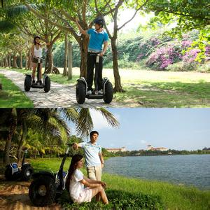
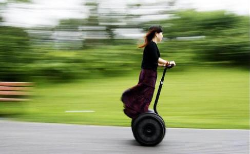

<html>
<head>
    <title>My Trip Around the USA on a Segway</title>
    <style>
        body{
            margin: 0 10% 5% 10%;/* top,right,buttom,left*/
        }
    </style>
</head>
<body>
<h1>Segway'n USA</h1>    
<p>
    Documenting my trip around the US on my segway!
</p>
    <h2>Auguest 20.2012</h2>
    
    <p>
        Well I make it 1200 miles already,and I passed through some interesting places on the way:
        <ol>
        <li>Walla Walla,WA</li>
        <li>Magic City,ID</li>
        <li>Bountiful,UT</li>
        <li>Last Chance,CO</li>
        <li>Why,AZ</li>
        <li>Truth or Consequences,NM</li>
        </ol>
    </p>
    <h2>July 14.2012</h2>
    <p>
        I saw some 
        <dl>
            <dt>Burma Shave signs</dt>
            <dd>Road signs common in the U.S. in the 1920s and 1930s 
                advertising shaving products.
            </dd>
            <dt>Route 66</dt>
            <dd>Most famous road in the U.S. highway system.</dd>
        </dl>
    on the side of the road today:
    </p>
    <blockquote>
        Passing cars,<br>When you can't see,<br>May get you,<br>A glimpse,<br>Of eternity.<br>
    </blockquote>
    <p>I definitely won't be passing any cars.</p>
    
    <h2>June 2.2012</h2>
    
    <p>
        My &lt;&gt;&amp; first day of the trip!I can't believe I finally got everything packed and readr to go,Because I'm not on a Sagway,I wasn't able to bring a whole lot with me:
        <ul>
            <li>cell phone</li>
            <li>iPod</li>
            <li>digital camera</li>
            <li>a protain bar</li>
            </ul>
    Just the essentials,As Lao Tzu would have said,<q>A journey of a thousand miles.</q>
    </p>
<pre>
#include<iostream>
#include"iomanip.h"
using namespace std;
int main()
{
    float a=3.45456;
    int b=5;
    char c='A';
    cout<<"a="<<setw(6)<<a<<endl<<"b="<<setw(6)<<b<<endl<<"c="<<setw(6)<<c<<endl;
    system("pause");
    return 0;
}

</pre>
    
</body>   
</html>  